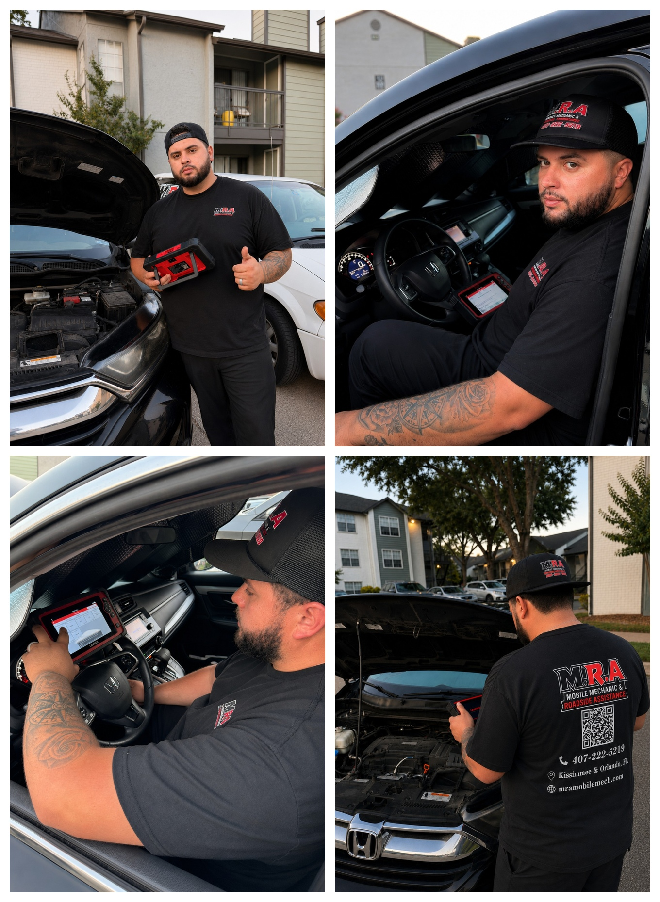

Diagnostics & Check Engine Light
Professional scanner diagnostics to accurately identify vehicle problems before replacing parts. Automotive diagnostics
Mobile Mechanic Service • Kissimmee, FL 34747
M.R.A. Mobile Mechanic & Roadside Assistance LLC has over 9 years of industry experience working on vehicles.
Our mission is to provide you with the highest quality service built on dependability, professionalism, and honesty.
Need your vehicle serviced or repaired? We bring mobile mechanic service and roadside assistance to Kissimmee 34747, Four Corners, Horizon West, Winter Garden, Celebration, Lake Buena Vista, ChampionsGate, Davenport, and nearby areas.
What we do
Professional scanner diagnostics to accurately identify vehicle problems before replacing parts. Automotive diagnostics
Repairs and maintenance performed at your home, workplace, or wherever your vehicle is located. Mobile mechanic service
Jump starts, battery replacement, lockouts, flat tires, fuel delivery, and emergency roadside support. Roadside assistance
Brakes, tune-ups, belts, batteries, alternators, starters, suspension, cooling systems, and much more.
Brake repair · Battery service · Alternators · Starters · Tune-ups · Cooling systems · Suspension
Starting, charging, ignition, sensor, and drivability diagnostics performed with professional equipment. Electrical repair · A/C service
Tell us about your vehicle and receive a fast estimate before scheduling your service.
Mobile service area
MRA is a mobile service-area business. We travel to your vehicle; there is no customer-facing repair shop. Ask about availability and travel distance for your location.
On-site mechanic and roadside help in the 34747 area and nearby Kissimmee communities.
Mobile diagnostics and repair at a safe, accessible location.
Request mobile automotive service around Winter Garden.
Request on-site diagnostics, selected repairs or roadside help at an agreed safe location.
Arrange mobile service by appointment, subject to travel and availability.
Ask about vehicle help near the Disney area. Property permission and a safe work location are required; MRA is not affiliated with Disney or lodging providers.
Ask about service in Lake Buena Vista, ChampionsGate, and Davenport. Call to confirm travel, service fit, and availability at (407) 222-5219.

Meet the owner
My name is Gilberto Miguel Rufat Alvarez, founder and owner of MRA Mobile Mechanic & Roadside Assistance.
My passion for the automotive industry began years ago, and I have been professionally working on vehicles since 2017. I graduated from Palm Beach State College in Lake Worth, Florida, where I earned my Automotive Technology certificate. Throughout my career, I gained valuable experience working in both used car dealerships and new car dealerships, allowing me to develop the skills and confidence to diagnose and repair a wide variety of vehicles.
In 2020, I decided to pursue my dream of building a company that puts customers first. That is how MRA Mobile Mechanic & Roadside Assistance was born.
Today, with over 9 years of hands-on industry experience, my mission remains simple: provide dependable, honest, and professional mobile automotive service that customers can trust. Instead of wasting your time at a repair shop or paying for expensive towing, I bring the shop directly to you.
Every repair is performed with attention to detail, using proper diagnostic procedures and quality workmanship. I take pride in doing the job right the first time and standing behind every service I provide.
At MRA, we don't cut corners; we do it right.
Why choose MRA
We bring professional automotive service directly to your location, saving you time, money, and the inconvenience of visiting a repair shop. Whether you're at home, work, or stranded on the road, our goal is to get you back on the road quickly and safely.
Integrity guides every repair, every promise, and every customer we serve.
“Whatever you do, work at it with all your heart, as working for the
Lord, not for human masters, since you know that you will receive an
inheritance from the Lord as a reward.”
Colossians 3:23–24
Need help today? Request a quote or contact us now.
Book a diagnostic
A pre-booking fee may be required depending on the service selected.
The required fee or deposit reserves your appointment. The amount and deposit requirements depend on the service and appointment selected through Square.
Any advanced or additional testing will be explained and approved before it is performed.
Terms & Conditions: By booking and paying any required pre-booking fee or deposit, the customer agrees to the terms listed on the Square booking site. Pre-booking fees and deposits are non-refundable unless those terms state otherwise. Additional testing and final service charges may vary based on travel distance, vehicle condition, and required work. No repairs or specialized testing will be performed without customer approval.
Contact us today to book your appointment. Call or text us for fast, dependable roadside and mechanic support in Kissimmee 34747 and nearby communities.